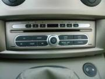
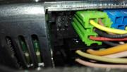
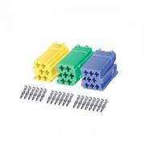
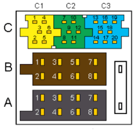
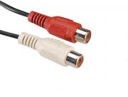
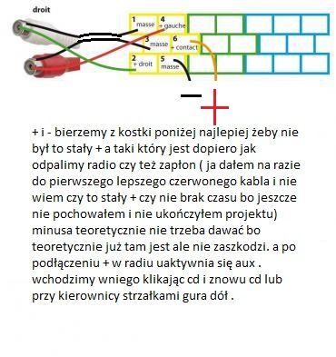
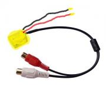
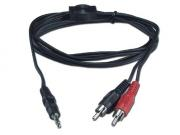
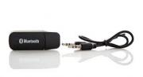

witam chciał bym podzielić się jak zrobiłem aux w moim radiu.
taką zmieniarkę posiadam ( większość fotek wygoglowanych )

a radio pod fotelem od tyłu wyglądało tak

jak zobaczyłem że nie mam żółtej kostki iso to szukałem ile wlezie żeby coś tam dodać aż znalazłem natchnienie na ruskim forum.Potrzebujemy zakupić kostkę np na allegro
 
potrzebujemy też kabel można od razu dać jack ale ja dałem najpierw taki

teraz podłączenie jak dacie jack to masy chyba trzeba połączyć w całość tak mi się wydaje że w jack jest jedna masa na dwa+ ja zrobiłem jak na foto

i mamy coś takiego

teraz dopiero zastosowałem kabel

a nawet tak na prawdę zastosowałem 2 takie kable ponieważ jeden mam w schowku do podłączenia telefonu a do drugiego podłączyłem adapter audio bluetooth do łączności bezprzewodowe

teraz mogę podłączyć za pomocą jack-a muzyke z np mp3 mp4 lub telefonem po bluetooth bezpośrednio do radia